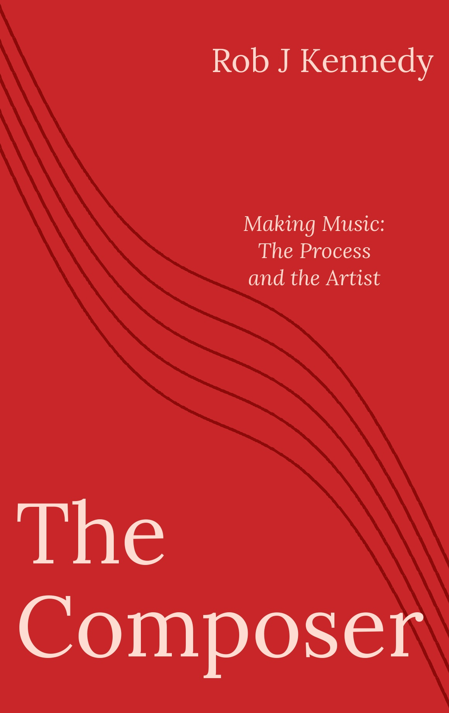
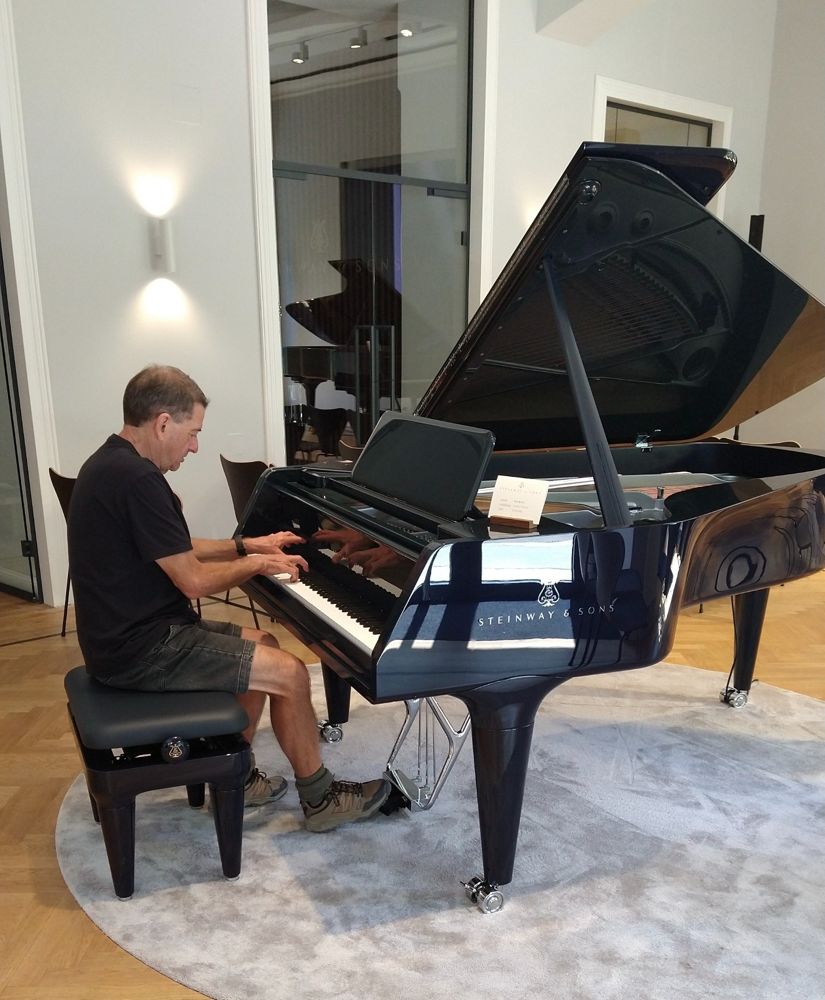
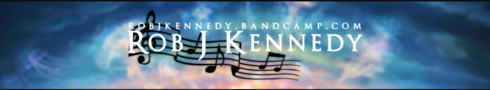
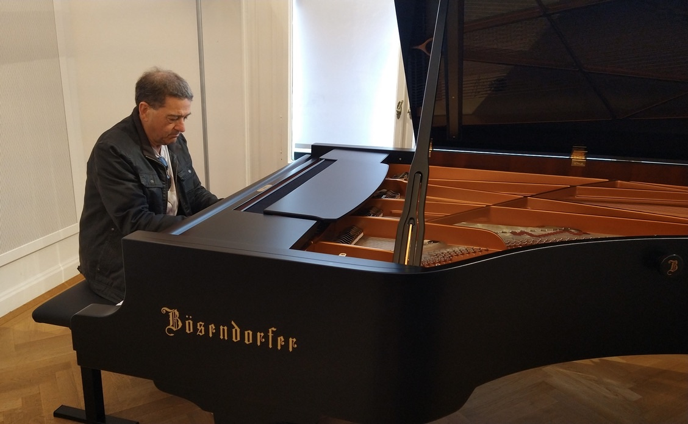

The Composer
An exploration of composing music, the creative process and the artist behind the work.

Listen to Rob’s compositions and recordings on Bandcamp (opens in a new tab).




An exploration of composing music, the creative process and the artist behind the work.
